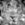
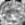
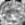
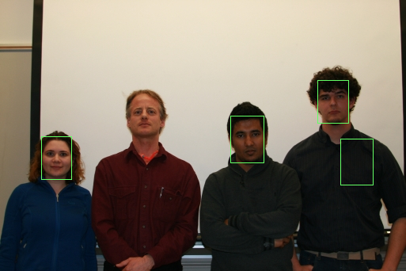
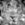
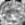

--(eigenfaces)
--(eigenfaces)(b).Using my friend's portrait
(c).Student group
because the student group images' size are roughly the same ,So I calculate that the scale range is about [0.6~0.8], so I use the command line below: the reason I will explain in the following statement

(e).QUESTION 1:
First, when we calculate the eigenfaces , we use the training image set which has rougly the width/height ratio about 0.7. That means , a face will initially compress from 7:10 to 1:1, so we need to take in 7:10 image from original image and compress it to 1:1 which is 25*25 and do the operation after that. and 25*10/7 =36. so 25*36.
Second, why 0.60~0.80, we need to find the exactly same size face of eigenface, the original picture is taken in a relatively stereo distance and angle, so everyone's face is about 40*56, so (25/40+36/56)=0.6339 , taking the consideration of error, so I roughly set the range to 0.60 to 0.80.
and about the scale step, I think 0.01 is too small for this image set, because the size of each face is approximately the same ,if we catch the range ,0.05 will be good enough.(f).QUESTION 2:
3.Verify face
(a). verify the face of each other with everyone else.
(b).QUESTION 1
As you can see from my chart, the 600 actuaaly works well for the whole verify part( if we don't pich a specific threshold for each verify step.) For the search for best threshold ,I use the golden point, which means, If the number of successful verfication lower down, I increase the threshold by 1.635, if this one exceed, lower it down by the 0.618 of augmented part.vice versa.
(C).QUESTION 2
The false positive is ,for each interesting image:
4.Extra credit
(a).morphing:
I use batch file to generate 100 morph image with distance from 0 to 1 using step 0.01, and create the video.
video/morphface.avi
(b).I implemented the following speedup,So my program's calculation for eigenfaces finish in 1 seconds;
(c).Apply my program to animal faces:
(average face) (eigenfaces)
(eigenfaces)
And I choose some typical example for the animal face recognition
and
we can see from the result that the animal face recognition is roughly
the same with human face but with lower accuracy, maybe because we
didn't take the consideration that the pattern of an animal is the most
critical feature. we should totally use another way to do this.
(d).The relationship between resolution of eigenfaces and recognition accuracy
From the chart we can see that the optimal choice is 25*25 and 45*45,so in order to save the store space ,the 25*25 is clearly the best choice.
And talking about why? because we only have 24 training set, we don't need too much information, in other word , a complex eigenfaces to describe all the faces, so 25* 25 works pretty good,
and too less is bad too, because if the dimensions of image remain low, you can not save too much information ,all the detail blur out, so the result is awful!
but after all, we can see a trend, the more the resolution ,the accuracy tends to be high.they are positive-related.
if just simple use --findface friend.tga neutral.face 0.1
0.2 0.01 crop 1 cropped_face.tga, I can't get this result.
So I add this image to the training set , and generate the neutral.face file again ,and run the command again, then I get perfect result!!
So I add this image to the training set , and generate the neutral.face file again ,and run the command again, then I get perfect result!!
because the student group images' size are roughly the same ,So I calculate that the scale range is about [0.6~0.8], so I use the command line below: the reason I will explain in the following statement
--findface group/test_single.tga neutral.face 0.6 0.8 0.05 mark 1 cropped_face.tga
(d).My family group
My program works actually very bad in my image, I analyse the procedure and find some possible reasons:
(1) The low texture area: I test my program a lot on my own image set, and when there appear some flat and dark color area, it always regard it as a face ,because the variance is low so the mse estimation is good . I try to apply the method mentioned in project web, but it helps very little so I abandon it, but I didn't figure out a good method.
(2) The training set problem, the majority of the training set are not chinese people so their faces look different, which means I can't reconstruct them correctly, it leads to the high mse than low texture area.
(1) The low texture area: I test my program a lot on my own image set, and when there appear some flat and dark color area, it always regard it as a face ,because the variance is low so the mse estimation is good . I try to apply the method mentioned in project web, but it helps very little so I abandon it, but I didn't figure out a good method.
(2) The training set problem, the majority of the training set are not chinese people so their faces look different, which means I can't reconstruct them correctly, it leads to the high mse than low texture area.
- What min_scale, max_scale, and scale step did you use for each image?
First, when we calculate the eigenfaces , we use the training image set which has rougly the width/height ratio about 0.7. That means , a face will initially compress from 7:10 to 1:1, so we need to take in 7:10 image from original image and compress it to 1:1 which is 25*25 and do the operation after that. and 25*10/7 =36. so 25*36.
Second, why 0.60~0.80, we need to find the exactly same size face of eigenface, the original picture is taken in a relatively stereo distance and angle, so everyone's face is about 40*56, so (25/40+36/56)=0.6339 , taking the consideration of error, so I roughly set the range to 0.60 to 0.80.
and about the scale step, I think 0.01 is too small for this image set, because the size of each face is approximately the same ,if we catch the range ,0.05 will be good enough.(f).QUESTION 2:
- Did your attempt to find faces result in any false positives and/or false negatives? Discuss each mistake, and why you think they might have occurred.
3.Verify face
(a). verify the face of each other with everyone else.
| neutral1 | neutral2 | neutral3 | neutral4 | neutral5 | neutral6 | neutral7 | neutral8 | neutral9 | neutral10 | neutral11 | neutral12 | |
| interesting1 | N.74030 | N.183925 | N.176156 | N.315894 | N.150208 | N.140269 | N.270283 | N.198773 | N.61087.4 | N.165841 | N.265484 | N.356395 |
| interesting2 | N.338170 | P.51689.6 | N.269247 | N.338115 | N.68700.1 | N.104768 | N.176465 | N.144656 | N.256746 | N.252469 | N.258749 | N.319318 |
| interesting3 | N.409138 | N.280138 | P.9810.34 | N.138583 | N.242051 | N.211523 | N.189179 | N.218895 | N.127611 | N.187674 | N.230024 | N.92177.3 |
| interesting4 | N.407657 | N.355602 | N.279719 | N.122253 | N.573193 | N.352204 | N.490215 | N.402890 | N.302921 | N.176439 | N.248766 | N.234923 |
| interesting5 | N.207385 | N.87856.3 | N.230968 | N.348491 | P.51181.6 | N.161077 | N.298924 | N.157519 | N.157459 | N.206341 | N.297346 | N.357416 |
| interesting6 | N.354894 | N.81344.8 | N.232935 | N.214127 | N.272636 | P.33850.5 | N.141402 | N.152436 | N.302705 | N.158453 | N.85732.3 | N.214222 |
| interesting7 | N.442752 | N.180401 | N.95707.9 | N.138966 | N.273099 | N.79084.7 | P.34819.8 | N.171112 | N.227844 | N.187103 | N.122429 | N.101826 |
| interesting8 | N.300177 | N.156420 | N.178609 | N.304913 | N.250356 | N.145581 | N.265023 | P.4777.03 | N.313887 | N.239032 | N.154442 | N.302507 |
| interesting9 | N.70800.3 | N.306829 | N.300526 | N.411994 | N.289434 | N.274921 | N.448486 | N.347028 | N.91481.4 | N.239989 | N.405766 | N.507796 |
| interesting10 | N.340469 | N.141958 | N.75526.6 | N.79861.6 | N.233906 | N.124948 | N.199937 | N.216849 | N.156315 | P.55867.4 | N.101203 | N.79755.3 |
| interesting11 | N.431947 | N.158297 | N.201683 | N.141625 | N.391407 | N.88662.2 | N.142678 | N.159184 | N.359775 | N.143570 | P.36239.9 | N.151552 |
| interesting12 | N.510629 | N.259917 | N.68960.3 | P.48484.8 | N.352825 | N.194565 | N.166340 | N.257433 | N.224066 | N.199565 | N.188501 | P.21299.8 |
| interesting13 | N.393820 | N.182830 | N.302753 | N.404317 | N.123576 | N.272888 | N.333030 | N.194111 | N.293722 | N.347197 | N.397660 | N.387510 |
| interesting14 | N.349366 | N.187833 | P.16961.4 | N.105690 | N.239981 | N.121145 | N.160317 | N.146930 | N.132919 | N.133161 | N.138834 | N.76290.1 |
| interesting15 | N.431378 | N.185913 | N.92939.3 | N.142588 | N.262506 | N.132200 | N.111092 | N.189736 | N.227390 | N.107260 | N.112871 | N.120356 |
| interesting16 | N.453780 | N.189012 | N.120542 | P.41446 | N.346098 | N.123645 | N.131323 | N.201743 | N.263969 | N.169916 | N.80476.4 | P.40414 |
| interesting17 | N.381279 | N.169694 | N.143935 | P.52618.9 | N.407503 | N.125457 | N.200080 | N.256010 | N.242039 | N.87360.5 | N.247425 | N.85430.7 |
| interesting18 | N.457398 | N.295214 | N.98916.5 | P.58101.3 | N.327838 | N.264211 | N.240837 | N.308332 | N.195614 | N.197931 | N.92831.3 | N.63668.7 |
| interesting19 | N.379517 | N.202763 | N.116778 | N.81407.6 | N.379733 | N.264211 | N.199253 | N.214669 | N.228060 | N.158891 | N.132877 | N.87188.6 |
| interesting20 | N.304798 | N.193931 | N.218526 | N.155332 | N.426516 | N.134010 | N.237617 | N.205913 | N.298696 | N.191970 | N.137618 | N.196412 |
| interesting21 | N.334618 | N.253462 | N.174509 | N.155522 | N.228913 | N.269043 | N.326595 | N.287124 | N.142175 | N.225226 | N.330760 | N.193549 |
| interesting22 | N.278917 | N.165695 | N.131001 | N.104619 | N.326217 | N.144657 | N.304971 | N.215286 | N.186883 | P.54738.2 | N.95399.9 | N.106253 |
| interesting23 | N.290398 | N.268065 | N.124445 | N.144277 | N.224014 | N.235182 | N.298723 | N.317053 | N.82252.1 | N.189656 | N.310999 | N.164017 |
| interesting24 | N.259163 | N.123615 | N.126145 | N.94724.2 | N.317458 | N.69774.3 | N.155356 | N.143164 | N.202946 | N.69838.5 | P.42601.5 | N.134250 |
| neutral13 | neutral14 | neutral15 | neutral16 | neutral17 | neutral18 | neutral19 | neutral20 | neutral21 | neutral22 | neutral23 | neutral24 | |
| interesting1 | N.264165 | N.150366 | N.186555 | N.323033 | N.295492 | N.319311 | N.265632 | N.279411 | N.429929 | N.210360 | N.169891 | N.181172 |
| interesting2 | N.138248 | N.246716 | N.231468 | N.235290 | N.299217 | N.341783 | N.282311 | N.300761 | N.717212 | N.310855 | N.319064 | N.196945 |
| interesting3 | N.338580 | P.57265.1 | N.80703.2 | N.183889 | N.176157 | N.93556.2 | N.174022 | N.242574 | N.625665 | N.142976 | N.107274 | N.129379 |
| interesting4 | N.558111 | N.172429 | N.205597 | N.252295 | N.137339 | N.276081 | N.155450 | N.273576 | N.142916 | N.132062 | N.174842 | N.207339 |
| interesting5 | N.123309 | N.214046 | N.234672 | N.306941 | N.315852 | N.332762 | N.315395 | N.349652 | N.538380 | N.249592 | N.226180 | N.228919 |
| interesting6 | N.340874 | N.157456 | N.125906 | N.142178 | N.133065 | N.351549 | N.132250 | N.127436 | N.614679 | N.156078 | N.312849 | N.79319.9 |
| interesting7 | N.351945 | N.84490 | P.58951.9 | N.109985 | N.120604 | N.192278 | N.98591.2 | N.129353 | N.718487 | N.194243 | N.249099 | P.46889.1 |
| interesting8 | N.222367 | N.154351 | N.142473 | N.238374 | N.258109 | N.359092 | N.220226 | N.202228 | N.528925 | N.148682 | N.299104 | N.119163 |
| interesting9 | N.377651 | N.220561 | N.290733 | N.454228 | N.382181 | N.467613 | N.346128 | N.385255 | N.293968 | N.282473 | N.230102 | N.284808 |
| interesting10 | N.369298 | N.81671.5 | N.70677.6 | N.187903 | N.67252.4 | N.116061 | N.125863 | N.207640 | N.524414 | N.90226.8 | N.125476 | N.97651.2 |
| interesting11 | N.352911 | N.146547 | N.79023.2 | N.107668 | N.82164.3 | N.230123 | N.77774.9 | N.72645.1 | N.625968 | N.132562 | N.319212 | P.38183.9 |
| interesting12 | N.403678 | N.62455.4 | N.68224.5 | N.68656.2 | N.100994 | N.75226.6 | N.71930.1 | N.144637 | N.562353 | N.119783 | N.127337 | N.88148.3 |
| interesting13 | P.11281.6 | N.294793 | N.293878 | N.245540 | N.402717 | N.355700 | N.352177 | N.355856 | N.695267 | N.324893 | N.308348 | N.275629 |
| interesting14 | N.341864 | P.10507.4 | P.36128.9 | N.128262 | N.99965.9 | N.144182 | N.101591 | N.157893 | N.502761 | N.66341.9 | N.108839 | N.62597 |
| interesting15 | N.293073 | N.115883 | N.62075.4 | N.190881 | N.96598.3 | N.179380 | N.146318 | N.196505 | N.741715 | N.184002 | N.256973 | N.72981.6 |
| interesting16 | N.385889 | N.86707.3 | N.73522.6 | P.29072.8 | N.81065.2 | N.98462 | P.45205.3 | N.93754 | N.501271 | N.111240 | N.147890 | P.57275.1 |
| interesting17 | N.419474 | N.72706 | P.33900 | N.130576 | P.15123 | N.68532 | P.14180.6 | N.63407.6 | N.473134 | N.97710 | N.222176 | P.30054.4 |
| interesting18 | N.389571 | N.123466 | N.134592 | N.133493 | N.163135 | P.13366.4 | N.140214 | N.239587 | N.488996 | N.171640 | N.73788.3 | N.163191 |
| interesting19 | N.380626 | P.53500 | P.47953.3 | N.125030 | N.78716.5 | N.191231 | P.30210.5 | P.51836.1 | N.461733 | N.72055.5 | N.171241 | P.42875.4 |
| interesting20 | N.344455 | N.136618 | N.87276.4 | N.128282 | N.143173 | N.282564 | P.44021.3 | P.8638.44 | N.487691 | N.162251 | N.277957 | P49565.8 |
| interesting21 | N.310290 | N.150003 | N.225248 | N.162031 | N.247180 | N.120887 | N.226091 | N.336750 | N.275444 | N.157438 | P.30095.9 | N.233556 |
| interesting22 | N.370926 | N.75313.7 | N.80418.6 | N.168581 | N.62456.2 | N.219175 | N.103531 | N.153090 | N.347056 | P.11680.5 | N.129276 | N.90710.9 |
| interesting23 | N.369907 | N.119242 | N.194998 | N.172628 | N.230834 | N.98097.2 | N.215259 | N.307670 | N.343644 | N.117665 | P.968.227 | N.218288 |
| interesting24 | N.313394 | N.66731.3 | P.26508.4 | N.132641 | P.49593.8 | N.218396 | P.34975.3 | P.52890 | N.439211 | N.102773 | N.210618 | P.5721.41 |
(b).QUESTION 1
- What MSE thresholds did you try? Which one worked best? What search method did you use to find it?
As you can see from my chart, the 600 actuaaly works well for the whole verify part( if we don't pich a specific threshold for each verify step.) For the search for best threshold ,I use the golden point, which means, If the number of successful verfication lower down, I increase the threshold by 1.635, if this one exceed, lower it down by the 0.618 of augmented part.vice versa.
(C).QUESTION 2
- Using the best MSE threshold, what was the false negative rate? What was the false positive rate?
The false positive is ,for each interesting image:
| 1 | 2 | 3 | 4 | 5 | 6 | 7 | 8 | 9 | 10 | 11 | 12 | 13 | 14 | 15 | 16 | 17 | 18 | 19 | 20 | 21 | 22 | 23 | 24 | |
| false positive | 0% | 0% | 4.16% | 8.33% | 0% | 0% | 0% | 0% | 0% | 0% | 4.16% | 4.16% | 0% | 8.33% | 0% | 8.33% | 16.66% | 4.16% | 16.66% | 4.16% | 4.16% | 4.16% | 0% | 20.93% |
4.Extra credit
(a).morphing:
I use batch file to generate 100 morph image with distance from 0 to 1 using step 0.01, and create the video.
video/morphface.avi
(b).I implemented the following speedup,So my program's calculation for eigenfaces finish in 1 seconds;
(c).Apply my program to animal faces:
(average face)
(eigenfaces)And I choose some typical example for the animal face recognition
| image to match | image matched | image should be matched | the recognition result |
| img9 | |||
| img9 |
(d).The relationship between resolution of eigenfaces and recognition accuracy
| Resolution of Eigen faces | number of recognized faces |
| 5*5 | 2 |
| 10*10 | 1 |
| 15*15 | 1 |
| 20*20 | 5 |
| 25*25 | 20 |
| 30*30 | 8 |
| 35*35 | 14 |
| 40*40 | 8 |
| 45*45 | 20 |
| 50*50 | 13 |
| 55*55 | 19 |
| 60*60 | 17 |
| 65*65 | 17 |
| 70*70 | 15 |
From the chart we can see that the optimal choice is 25*25 and 45*45,so in order to save the store space ,the 25*25 is clearly the best choice.
And talking about why? because we only have 24 training set, we don't need too much information, in other word , a complex eigenfaces to describe all the faces, so 25* 25 works pretty good,
and too less is bad too, because if the dimensions of image remain low, you can not save too much information ,all the detail blur out, so the result is awful!
but after all, we can see a trend, the more the resolution ,the accuracy tends to be high.they are positive-related.